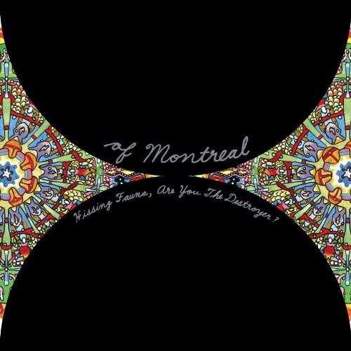

of Montreal, part of the Elephant 6 collective that spawned (among others) Neutral Milk Hotel and The Olivia Tremor Control, has released twelve albums in sixteen years. While not as consistent in quality as, say, Spoon, of Montreal's substantial output has yielded several magnificent albums. Hissing Fauna, Are You The Destroyer? is of Montreal's finest work, an impressive struggle with depression and identity backed by infectious melodies and grooves.
This album is a masterpiece. The first half is quintessential quirky indie pop, and the second is glorious glam-pop. The shift is pulled off seamlessly during the album's twelve-minute centerpiece "The Past Is a Grotesque Animal," in which Kevin Barnes (who wrote the album himself) transforms into a black transsexual (I got my Georgie Fruit on / He's a dark mutation / For my demented past time). He keeps this alter ego for the rest of Hissing Fauna and of Montreal's next three albums, which are named after the last lines of "Faberge Falls For Shuggie" (Skeletal lamping, the controller sphere, false priest).
The album begins with "Suffer For Fashion," which might be the most straightforwardly catchy song on the album. It has a bit of an early Arcade Fire feel. The next two songs are similarly catchy, trippy indie pop. One of the best tracks on the album is lead single "Heimdalsgate Like a Promethean Curse," a plea with serotonin to not make Barnes "sick again." "Gronlandic Edit" and "A Sentence of Sorts in Kongsvinger" deal with depression, isolation, and identity crisis (I spent the winter with my nose buried in a book / While trying to restructure my character / Cause it had become vile to its creator). "The Past Is A Grotesque Animal" follows directly after, an epic cathartic freakout. From its ashes rises "Bunny Ain't No Kind Of Rider," a more lighthearted put-down of a club patron's come-on (which he shoots down due to her lack of soul power). "Faberge Falls For Shuggie" is of Montreal at its grooviest and trippiest. "Labrynthian Pomp" is another power-glam tour de force, beginning with How you wanna hate a thing / When you are so inferior. It flows quite nicely into the similar "She's A Rejector." "We Were Born the Mutants Again With Leafling" is a slightly calmer, more melodic and thoughtful ending to a fantastic album.
Barnes' lyrics contain the key to Hissing Fauna's success. We just want to emote until we're dead / I know we suffer for fashion or whatever, implying that we suffer because it's fashionable. Barnes is notorious for his dry humor, and it's at its strongest here. The album features lines such as Saw her at Go kissing girls, what a shock / I said you must be an artist and Somehow you've red-rovered the Gestapo circling my heart At the same time, he is honest to a fault and inexplicably clever. Throughout the album, Barnes struggles through chemical depression and the deterioration of a relationship, and does so in a brilliant, weird, and yet relatable way. Few songwriters can be as simultaneously odd and familiar as Kevin Barnes, and he is at his best on this album.
Hissing Fauna, Are You The Destroyer? is an essential listen for anyone who has struggled with chemicals, has a dry wit, or just loves damn good indie pop songs.
Artist: of Montreal
Album: Hissing Fauna, Are You The Destroyer?
Score: 5.0
Label: Polyvinyl
Release: 2007/01/23